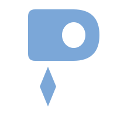

P bowl and pin stem separated — two parts, one mark. The gap makes it distinctive and modern.
Straight gap, tapered pin below
Rounded bowl, organic teardrop pin
Sharp geometric triangle pin, bold
Rounded top on pin, smooth taper
Kite/diamond shaped pin, distinctive

Organic curved pin, slightly offset
Pill-shaped stem with pointed tip
Abstract: line + dot, most minimal